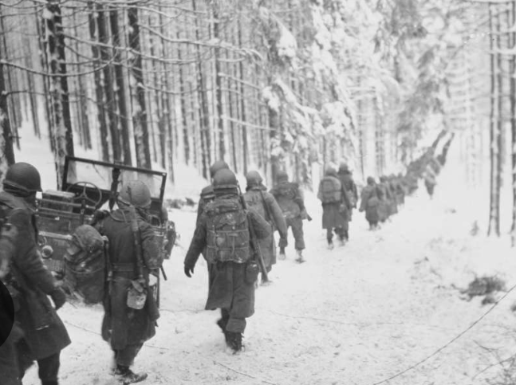
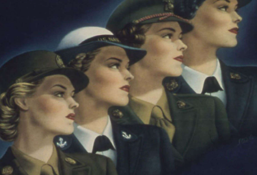

About "The Women Before Us"
Every woman has a story. Sometimes it’s shared over tea at the kitchen table. Sometimes it’s scribbled in an old letter. But far too often, these stories are told once and then forgotten—never written down, never passed on.
The Women Before Us is a growing digital archive devoted to remembering those stories. This project is about honoring ordinary women: grandmothers, great-grandmothers, mentors, aunts, neighbors, and friends. Women who walked through history, even if they were never written into it.
How to Submit a Story
Anyone can contribute. All you need is something small—a memory, a photo, a quote, a story she told, a letter, a note, or even just a single sentence she once said that stuck with you.
You can share your submission through the “Submit a Story” page on this site.
Ask questions. Write down answers. Preserve her memory.
The Heart Behind the Work
This project was born from a few core passions of mine: storytelling, history, memory, and women. I've always been drawn to the quieter stories. Read a little about the inspiration below.
My Grandmother’s Interview Packet
I wanted to capture my grandmother’s story—in her own handwriting—so I created an “interview packet” for her to fill out. I designed it with a 1960s theme, filled with color-coordinated illustrations and sixty thoughtful questions that walked her through the major stages of her life:
- 10 about her early childhood
- 10 about being a young adult
- 20 about womanhood
- 10 about aging
- 10 about the major historical events she lived through
She completed the entire packet for me, and now I have something to hold onto: her handwriting, her words, her memories. If you’re interested in doing a similar project with your grandmother or a female role model in your life, you can view some of the questions I wrote for her on the “Start the Conversation” page. To read some of her responses, check out my "Sally Scott Spier Stassi"’s page when you Meet the Women!
A Tribute to My Great-Grandmother: "The Picture in His Wallet"
"The Picture in His Wallet" is a personal project I created to honor my great-grandmother, "Deola". During her lifetime, she wrote down reflections about what it was like to live through World War II as a woman on the home front. I took those handwritten reflections and carefully transcribed them, organizing her memories into different themes—childhood, womanhood, wartime resilience, and more.
To bring her story to life in a creative way, I paired each of her reflections with an original poem I wrote in response. There are sixteen poems in total, woven together with her words to create a kind of conversation between generations—hers and mine.
The result is a book that blends personal memory, historical context, and poetry. It offers a glimpse into the world of women like Deola, whose everyday strength helped hold families, communities, and hope together during one of the most uncertain times in history.
The title, "The Picture in His Wallet", is symbolic. It comes from the idea that women like Deola were often the ones left behind during war—but they were never forgotten. They were the faces carried into battle, the people soldiers dreamed of coming home to. They were the emotional anchors—the hope, the home, the reason to return.
“Shall I remain the apple of your eye, the picture in your wallet, the rose that wakes you, and pulls you home?”
You can learn more about Deola and read excerpts from her story by visiting her page on the Meet the Women section of this site.
My Rosie the Riveter: A Living Connection to History
In 2025, I had the opportunity to participate in a service project at the National World War II Museum. There, I was paired with a real-life Rosie the Riveter—“Lucretia Jane Tucker,” or simply “Jane.”
Jane spoke with grit and pride—not just about her work during the war, but about what it meant to stand tall in a world that didn’t welcome her ambition. At the end of our visit, she handed me a signed card with her photo and said, “Save it for your grandchildren.” I framed it. I wrote her a thank-you letter. Weeks later, she wrote back—by hand—offering encouragement that I carry with me:
“One day you will be a great writer. If I had a place to publish your letter, I would do it to inspire other young girls.”
She included a prayer card, a photo of us, and her phone number. I texted her right away. We've been in touch ever since.
Inspired by Jane’s encouragement, I redoubled my efforts on "The Picture in His Wallet". I ended up dedicating the book to both my great-grandmother and to Jane. When I mailed her a copy, she sent me back a novel—"Becoming Jestina" by Merrill Davies, based on her own life story. What began as a school service project has become a friendship across generations—a reminder that history is never finished.
Check out Jane’s page when you Meet the Women!
Giving Voice to the Unnamed: "Girl with Straw Hat"
In 2024, I was honored by The Historic New Orleans Collection as a first-place winner in their National Student Writing Contest. The prompt—“Tell Us Who They Are”—asked students to imagine the inner life of someone whose identity had been lost to time.
I chose “Girl with Straw Hat”, an 1868 portrait by François Bernard. She wears a white dress and holds a hat adorned with flowers—elegant, composed, and unnamed. But her eyes told a different story. There was a restlessness in her gaze, like she was asking to be seen. So I gave her a voice. I wrote from her imagined perspective—about the inequalities she witnessed but couldn't name, about the role she was expected to play, and about the quiet rebellion in her spirit.
My poem was displayed beside the original painting in the museum’s Unknown Sitters exhibition. That experience confirmed what I’ve always felt: Even when a name has been forgotten, the story doesn’t have to be.
Sally Scott Spier Stassi
Childhood
Changing America
As a child Sally lived in a San Diego that was both quiet and poised for transformation. In the 1930s, the city still had the feel of a large town, with dusty roads, small neighborhoods, and clusters of orange groves. But change was in the air. The Navy and the newly formed Army Air Corps were expanding their presence, and the hum of military preparation would soon become part of daily life.
Aunt Ruth’s House
Her earliest and fondest memories took place beyond the city limits, at her Aunt Ruth’s sprawling country home. Ruth lived there with three sisters, all unmarried — a notable choice in an era when most women married young, often before 25. Their independence, though unspoken, quietly challenged the cultural norms of the time.
For a child, the house was an adventure waiting to happen. “We especially liked sliding down the banister of her stairs,” Sally recalls. Her Aunt Sadie kept a cow named Bossy, and, to a city child, the sight of fresh milk foaming in a pail was a small marvel.
A Shy Girl Surrounded by Love
Sally describes herself as “shy with adults and new friends,” yet her shyness was buffered by a home steeped in affection. Her mother was “cheerful and loving,” the kind of mother whose warmth anchored the household. Her father, serving in the Army Air Corps, was “selfless to a fault” and spent as much time with his children as possible. This devotion was remarkable in a decade when fathers were often away for work — or, increasingly, for military service.
The House Built While the World Was Changing
While her father was stationed in San Diego with the Army Air Corps, her parents purchased a wood-frame house — a home Sally would return to for decades, until her parents’ deaths. These modest houses were part of a larger wave of suburban-style building in Southern California, a physical expression of both post-Depression hope and the military boom.
Sisters, School, and the Rhythm of Small-Town Life
She shared a bedroom with her younger sister, five years her junior — an age gap that felt vast in childhood. “I thought of her as a little brat."
Their school, Eastside Elementary, was only a block away, close enough for Sally to walk home for lunch. Her Aunt Ruth served as the school principal, a reminder of how family was woven into every corner of her childhood.
The Quiet Joy of Just Being a Child
When asked what she looked forward to about becoming a woman, Sally admits she never thought about it. She was happy “just being a child,” surrounded by grandparents, aunts, and uncles. In the 40s, without the pressure of social media or the acceleration of childhood through mass marketing, children like Sally had the rare freedom to grow slowly, their worlds expanding at a human pace.
The Lasting Impression of Innocence
If there’s one thing she misses most about her childhood, it’s the innocence — not naïveté, but a deep trust in the goodness of the world around her. That trust, cultivated in the warmth of her family and the stability of her neighborhood, would carry her into the uncertain years of wartime and postwar America.
Becoming Herself in the Swinging Sixties
Emergence into Womanhood
In the 1960s, she was buoyed by the quiet security of trusting parents. Independence felt pre-granted—not craved. Around her, the world was shifting. Young women dropped beloved conservative styles in favor of mini skirts, go-go boots, and bold new fabrics—symbols of youthful rebellion and self-expression. Mary Quant introduced her daring mini skirts—hemlines that drove shock and excitement—marking a fashion revolution and a nod to liberation.

Yet, in college at Ole Miss, she embraced the community’s aesthetic: clean-cut, youthful, Ivy League–inspired styles like madras shirts that whispered both privilege and accessible grace.
Music evoked memory—crooners like Jack Jones filled dorm rooms. His smooth voice, known for hits like “Wives and Lovers” and “Lollipops and Roses,” shaped the soundtrack of the time.
Early Independence & Career Choices
After college, the thrill of freedom was tempered by uncertainty. Professors nudged her toward teaching—a respectable, time-honored career—but she followed the pull of airplanes and flight. She became a flight attendant for Delta Airlines: an entry into an exclusive world shimmering with glamour.
In that era, a stewardess was celebrated for grace, poise, and style. Airlines carefully curated their image: polished uniforms, perfectly coiffed hair, and manners were all part of the package.
Stewardesses represented the jet-set lifestyle that seemed both radical and accessible — traveling across continents, embodying modern womanhood and independence while wearing perfectly pressed uniforms and makeup. It was a role wrapped in both opportunity and societal expectation.
New Orleans and Los Angeles: Moving Through Change
Assigned to New Orleans, she soon called the French Quarter her own. There, “home” was magnolias and café au lait, a life balanced between familiar Southern charm and the demanding grace of airline work.
Then came Los Angeles—1966, marriage, and a seismic change. As she settled into a new life in smog-choked L.A., her work shifted to UCLA’s Graduate Business School, where her day-to-day contrasted sharply with the aisles of jet travel.


Marriage, Motherhood, and Reinvention
By the late 1960s, the trajectory of Sally’s life had bent toward the path of marriage, children, and a home meant to echo the one she’d grown up in — loving, supportive, and full of family.
She never doubted she wanted children. “I suddenly had a big responsibility… I felt like a different person. But I was happy about it.” Her sons arrived in an era when parenting was still defined by hands-on mothering, often without the support networks or flexibility women now have. In those early years, the prevailing emotion was devotion. She delighted in sharing her children with her extended family in Bastrop, especially her aunts, who “were thrilled to hold and play with them.”
Shifts in the Foundation
The 1970s and early ’80s brought their own upheavals. Divorce, though increasingly common by then, was still a rupture that carried social weight. For Sally, the shift to living alone was “a relief at first,” a release from the quiet constraints of a marriage that no longer fit. But it also meant navigating adulthood without the protective framework she had known since childhood.
There was another transformation running parallel — one tied to a wider change in women’s lives. The women’s movement was in full swing, reshaping workplaces, redefining gender roles, and slowly dismantling the assumption that a woman’s most productive years ended when her children were grown.
A Career, and a New Chapter of Self
For Sally, that second act arrived unexpectedly. In her fifties, she stepped into a role at The Historic New Orleans Collection, working as a reference associate in the Williams Research Center. She found herself immersed in Louisiana’s layered past, connecting with scholars, writers, and visitors from around the world.
“It was a wonderful, rewarding experience,” she recalled. “I learned so much about Louisiana history and met people from all over the world.” For a woman raised in a small, affectionate orbit of family, the museum became both a window to the wider world and a stage where she found her voice.
The Broader Lens
Looking back, Sally recognized she had lived through — and participated in — one of the great shifts in the 20th century: the normalization of careers for women. “That was once only for men,” she observed. In her youth, professional ambition was often framed as an exception; by the time she retired, it was an expectation.
Yet she also saw what had not improved enough. “Civility, worldwide, has declined hugely,” she reflected. Her faith, simple and enduring, anchored her perspective: “I’ve always believed God loves all his children.”
Aging
Becoming a grandmother was joyful. She threw herself into caring for her grandchildren with the same energy and devotion she’d given to her own children.
She had lived through decades of change—war years, postwar optimism, the feminist movement, and the rapid march of technology—but oddly enough, she didn’t feel the weight of age until she turned 80. Only when her body began to slow did she recognize the speed of time.
What troubles her most is the way modern culture treats the elderly—politely ignored at best, dismissed as “useless and irrelevant” at worst. She contrasts this with her observations of Chinese traditions, where elders are revered, sought out for advice, and seen as the living memory of a family.
To her, aging with grace is about being pleasant to others and letting go of petty annoyances. “Don’t worry about age,” she says, “even though it’s hard not to. Be pleasant to everyone you can. Try not to obsess over the small stuff. Keep smiling!!”
One of her proudest personal victories was overcoming her childhood homesickness. She had been a child who clung to the comfort of home, who cried through two whole weeks at a church camp. For years, leaving home had felt like an ordeal.
But over time, she learned to “spread her wings,” to loosen her grip on the familiar. That transformation—going from a homesick girl to a woman who built a life in new cities, tried new careers, and faced change head-on—shaped her sense of self.
A Life Intertwined with American History
World War II (1939–1945): A Childhood Marked by Resilience
In 1940s San Diego, blackout shades turned day into night, and Sally’s memories of playing amid austere Red Cross facilities spoke to wartime improvisation and community spirit. Floating balloons over Balboa Beach and sledding down snowy hills in Spokane captured childhood joy in stark contrast to global turmoil.
These moments mirror the vast domestic mobilization and local solidarity that characterized life on the homefront—where everyday rituals and small delights shone amid rationing and uncertainty.
Elvis and the Rise of Rock ‘n’ Roll (1950s)
Rock ‘n’ roll crackled through the radio, stirring excitement and change. Sally didn’t initially embrace Elvis’s early rock persona—perhaps too brash for her taste—but warmed to the seasoned showman he became, especially when backed by an orchestra and the Sweet Inspirations. It was his “American Trilogy” performance that won her over, showing how rock’s evolution mirrored broader shifts in style and sentiment.
The JFK Assassination (1963): A Nation Pauses
She remembers exactly where she was when JFK was assassinated—perhaps stunned, disconnected, unsure whether the grief playing out on television could be real. Like many, the days that followed deepened her feelings about his presidency, a mix of admiration and nostalgia.
The Civil Rights Movement (1950s–1960s): A Personal Awakening
Martin Luther King Jr.’s leadership and his iconic speech at the Lincoln Memorial shook her awareness. She realized how complacent acceptance of segregation had become—and that it had to end. As a student at Ole Miss during James Meredith’s integration in 1962—an event met with violent resistance and federal intervention—she lived at the heart of these social tremors. Witnessing history unfold firsthand instilled in her the urgency of justice and change.
The Moon Landing (1969): Shared Wonder
Watching astronauts walk on the moon with her husband Bob and their infant Gregory filled her with pride and awe.
The Women’s Liberation Movement (Late 1960s–1980s): Change With Caution
While she recognized the movement’s significance, the dramatic fringes—protests, bra burning, radical slogans—felt distant to her Southern roots. It was change, yes—but not the kind she connected with fully.
The Vietnam War (U.S. Involvement, 1965–1973): From Belief to Regret
Working at UCLA during the protests, she saw campuses erupt with dissent. Initially, she supported the war based on Cold War-era logic—contain communism or risk global collapse. Over time, she came to see it as a tragic misstep, one that cost too many lives for an elusive peace.
The Rise of the Internet (1990s): From Skeptic to Reliance
At first, the internet was just another novelty. Now? She can't imagine life without it.
September 11, 2001: A Day of Infamy Revisited
She never expected an attack on U.S. soil. Like many, she felt a deep collective shock—echoes of Pearl Harbor’s horror, as President Roosevelt once put it. The phrase “a day that will live in infamy” felt eerily familiar.
Deola Daigle: A Woman’s War

A World on the Edge
Across the Atlantic, Adolf Hitler’s armies swept across Europe with terrifying speed, occupying France, bombing Britain, and setting in motion the machinery of genocide that would come to be known as the Holocaust. In the United States, the Great Depression had officially ended, but its shadow lingered. Jobs had returned, but uncertainty was a constant companion. And in towns across America, the Selective Training and Service Act — the first peacetime draft in U.S. history — had begun reshaping lives.
In small parishes of Louisiana, like so many places in America, life went on as usual — or so it seemed. On front porches, women snapped beans while the radio played The Andrews Sisters. In the evenings, news bulletins reported on far-off battles in countries most Americans had never seen. It was in this atmosphere — a blend of domestic familiarity and uneasy foreboding — that Deola Daigle became engaged to a young man named Albert.
An Engagement on Borrowed Time
Albert, like many young men of the time, was already thinking ahead. He knew that service in the army was likely inevitable. Rather than marry quickly, he proposed that they wait until he had completed his required year of duty. In the summer of 1941, he reported to Fort Bragg, North Carolina, for training. They imagined this separation would be temporary — a year of distance before they could begin their life together.
In those months apart, they exchanged letters, their words carrying tenderness and hope between towns and army posts. Deola imagined a quiet future: a wedding, a home, perhaps a family in a few years’ time.
December 7, 1941
The attack on Pearl Harbor was a shockwave. Japan’s sudden strike destroyed battleships, killed over two thousand Americans, and shattered the country’s sense of safety. The next day, President Franklin D. Roosevelt declared war. For Deola and Albert, this meant their year apart would stretch indefinitely — “for the duration of the war,” as the official term went. That phrase, deceptively vague, meant months or years. It meant uncertainty. It meant goodbye.
A Wartime Wedding
In April 1942, Albert came home on leave for Easter. He would only be there for one day. The couple decided not to wait any longer. That Sunday morning, Deola borrowed a white dress. There was no elaborate church ceremony, no professional photographer, no honeymoon. They were married in a rush, surrounded by family, but even as they celebrated, a clock ticked toward his departure. At 5 p.m., Albert boarded a train, leaving his new wife on the platform.
The War Comes Home
When Albert was stationed in Gatesville, Texas, Deola followed him. She arrived to find a town transformed by the military presence. Housing shortages were severe — newly built barracks for soldiers, and hastily converted rooms for their wives. She found a small, rented room and began to build a makeshift home.
Her life was marked by two constants: waiting and adapting. She walked into town to buy food, navigated ration books for sugar, meat, and butter, and learned the art of stretching every ingredient. Fresh bread — the kind her mother baked — became a rare luxury. Her father’s home-raised meat was a memory. In Texas, she found herself craving the tastes of home, but rationing dictated what could be bought and when.
Finding Community
Loneliness was an unspoken enemy in wartime America. For military wives in towns far from family, organizations like the United Service Organizations (USO) became lifelines. Deola visited the USO for coffee, doughnuts, and the occasional board game. These gatherings offered relief — a few hours of conversation, laughter, and shared stories from women in similar situations.
Meeting and Missing
January 1944 to September 1945
“JANUARY 1944, HE WAS SENT TO FORT LEWIS IN AUSTIN, TEXAS. MY BABY WAS THREE MONTHS OLD. I WENT TO MEET HIM THERE. I WENT BY BUS. IT WAS A LONG TRIP BY BUS AT NIGHT. CAROL CRIED A LOT. I ARRIVED IN THE EARLY MORNING HOURS. IT WAS VERY COLD. AUSTIN HAD A RARE SNOWFALL. THE HOUSE MY HUSBAND RENTED HAD HIGH STEPS TO CLIMB AND THEY WERE FROZEN. THE CAB DRIVER GRACIOUSLY HELPED ME UP THE STEPS. MY BABY, CAROL GOT TO MEET HER DADDY FOR THE FIRST TIME.”
— DEOLA DAIGLE
The “rare snowfall” is not romantic exaggeration: Austin recorded a heavy snowfall in mid-January 1944 (one of the city’s most notable snow events in the 20th century). The city’s roads would have been slick, steps iced over, and a woman arriving by overnight bus with a three-month-old would have felt every degree and every mile.
The moment itself is quiet and thunderous: a tiny child opening her eyes to a father who has been ink and paper, a voice on a long, slow line of letters, until now.
Two months later, Deola follows his movements again. Albert is reassigned to Camp Gruber near Muskogee, Oklahoma; she travels overnight, Carol sick on the train, and her luggage never arrives. Deola’s memory is sharp here:
“ABOUT TWO MONTHS LATER, HE WAS TRANSFERRED TO CAMP GRUBER IN MUSKOGEE, OKLAHOMA. AGAIN, I WENT TO BE WITH HIM, AND AGAIN ARRIVED IN THE MIDDLE OF THE NIGHT. CAROL GOT SICK ON THE TRAIN AND VOMITED ALL OVER ME. WHEN WE ARRIVED AT THE HOUSE WHERE ALBERT HAD RENTED A ROOM, I DISCOVERED MY LUGGAGE HAD NOT ARRIVED. THE BABY HAD NO CLEAN DIAPERS. THE LANDLADY WAS AN ANGEL. SHE LET ME HAVE SOME KITCHEN TOWELS TO USE UNTIL I COULD WASH THE DIAPERS AND GET MY LUGGAGE.”
— DEOLA DAIGLE
Camp Gruber was a major World War II training installation; during the war it trained infantry, field-artillery and tank-destroyer units that later fought in Europe. Housing near these training camps was chronically short, and many soldiers’ families lived in boarding houses, upstairs rooms over businesses, or converted farmhouses — places where landladies often controlled key comforts (access to an oven, a basin of hot water, a line of clean sheets). Deola’s scene — a frightened mother with a sick infant, arriving late at night, saved by a landlady’s kindness — matches thousands of similar wartime vignettes. The fact that a landlady loaned kitchen towels to make diapers work speaks to the everyday economies of care women built for one another near bases.
Think about the logistics behind those sentences: train or bus routes running at night to connect small towns and military posts; crowded stations where luggage could be delayed or lost; rationing and scarcity making replacement clothing or supplies difficult to come by. Intercity bus lines (Greyhound and regional carriers) still carried large numbers of civilians then; railroads and passenger trains carried troops and their families on constrained timetables. Long overnight trips, crying infants, late-night cabs, frozen steps — all common elements of a wartime civilian’s travel.
By August 1944, the record turns again: Albert gets orders overseas. Deola is pregnant once more.
“BECAUSE I WAS PREGNANT AGAIN, HE GOT A PASS TO ACCOMPANY ME HOME ON THE TRAIN, BUT HE HAD TO TURN RIGHT AROUND AND GO BACK TO CAMP.”
— DEOLA DAIGLE
This line holds the ache of every wartime parting: a short intimacy followed by the familiar goodbye. It also marks the moment where ordinary logistics meet the vast, unpredictable sweep of global strategy. By mid-1944 the Allied armies were pouring men into France (D-Day June 6, 1944 was the turning point), and by late 1944 many American units that trained at stateside camps were on the continent, fighting through northern France, the Low Countries, and into Germany. The months that followed would see some of the war’s fiercest winter fighting.
Albert landed in France in 1944 and was involved in two of the great, terrible fights of that winter and spring: parts of the Rhineland fighting and the Battle of the Bulge. Deola writes this plainly:
“HE LANDED IN FRANCE IN 1944 AND WAS IN TWO MAJOR BATTLES, ‘THE RHINELAND BATTLE’ AND THE ‘BATTLE OF THE BULGE’.”
— DEOLA DAIGLE
Both of those campaigns were ferocious and critical. The Battle of the Bulge (December 16, 1944 – January 25, 1945) was Hitler’s last major offensive on the Western Front; it took place in the Ardennes and in bitter winter conditions that exhausted soldiers on both sides. The Rhineland operations were a series of Allied offensives in late 1944 and early 1945 that pushed into Germany’s western defenses and prepared the way for entry across the Rhine. For soldiers who fought there, the weather, the mud and snow, the confusion of sudden offensives and counter-attacks, and the strain of long marches and artillery barrages left deep scars.

Back home, Deola’s life contracted around a heartbeat and a fear. She lived with her parents for a while, then with Albert’s sister Alberta and her husband Murphy, and later was taken in by family friends. Children and other helpers made the days possible: “Becky” — an eight-year-old niece — became an unexpected helper, watching the babies while adults worked or worried. Deola’s fear when she heard a car at night—“I was so afraid it was someone coming to tell me Albert had been killed in the war”—is historically echoed in thousands of home front letters and oral histories. Waiting was not passive: it was a state of sustained vigilance. (On the home front, newspapers, neighborhood watch groups, and every arriving automobile could mean news, good or ruinous.)
When Germany surrendered in May 1945 (V-E Day), the fighting in Europe effectively ended — but that did not mean men came home the next week. Troops had to be processed and transported. The massive, complex effort to bring millions of service members home — by sea and by air — is often called Operation Magic Carpet: it took many months to reassemble families. It’s therefore entirely plausible — and historically typical — that Albert would not be home until September 1945. Deola remembers the surprise of that night:
“THE WAR ENDED IN MAY 1945. MY HUSBAND CAME HOME IN SEPTEMBER OF THAT YEAR. HE SURPRISED US BY COMING IN AT THREE IN THE MORNING. CAROL WAS TWO AND A HALF BY THEN. SHE WAS ONLY EIGHT MONTHS OLD WHEN LAST SAW HER. BRENDA WAS EIGHT MONTHS OLD. I THINK HE FELT THAT SHE WAS THE EIGHT-MONTHS-OLD HE HAD LEFT BEHIND.”
— DEOLA DAIGLE
That pre-dawn knock, the rustle of a uniform in the doorway — these are the images that closed the four-year rupture for many families. For some families the reunions were sweet, for others ragged and hard, and for too many they never came.
After Albert’s return, Deola writes they resumed their life and the family grew: seven more children followed, money was tight, and their marriage endured for forty-four years. She also records the grief of friends who did not return: “Our friend Charles Nini died of a heart attack while under a siege in a battle in France.” That line is both personal elegy and a reminder that the war’s arithmetic of loss included not only battlefield deaths but the long, permanent changes to bodies and minds that came home with survivors.
A Woman of Her Time — and Ahead of It
Deola’s wartime life was both ordinary and extraordinary. Ordinary in the sense that thousands of women experienced similar disruptions — weddings shortened by train schedules, babies born in fathers’ absence, evenings spent alone listening to war news. Extraordinary because she faced it all with quiet endurance. She did not see herself as heroic; she was simply doing what needed to be done.
In truth, she was part of a generation of women who bridged eras — raised in the traditions of the 1920s and 30s, but thrust into a modern, mobilized America where women took on unprecedented roles in factories, offices, and communities. While “Rosie the Riveter” became a cultural icon, women like Deola — who didn’t rivet planes but kept the home front intact — were just as essential to the war effort.

Carrying Rosie’s Legacy
In March, I had the opportunity to participate in a service project at the National World War II Museum, where I was paired with a real-life “Rosie the Riveter” — one of the many women who stepped into defense industry roles during World War II. I was matched with Lucretia Jane Tucker, or simply “Jane.”
Hearing her story firsthand was unforgettable. Jane spoke with warmth, grit, and pride — not just about her work, but about what it meant to stand tall in a world that wasn’t welcoming. At the end of our visit, she gave me a signed information card with her photo and story on it and told me, “Save it for your grandchildren.” I’ve since framed the card and hung it in my room to keep it safe.
To honor Jane, I used online interviews and articles about Jane and the Rosies to write her story.
Jane’s Story
Lucretia Jane Tucker, a woman approaching 98 with a bright red lipstick smile, remembers a time when the world was changing, and she was right there in the thick of it.
Jane was born in 1927 in the small Alabama town of Lineville. Her early years were defined by the Great Depression and the challenges of being a young girl in a single-parent household. Her mother, Iris, was a divorced woman in an era when that was unheard of, working as a switchboard operator to make ends meet. Jane and her older sister, Betty, knew what it meant to go without.
"I grew up in the depression. I remember it clearly," she says. "My mother and father were divorced when I was two. So we went back to my hometown, back to Linville to live. It had a population of about a thousand people. We were like everyone else. My mother worked. She was to play the piano at a silent movie. Then, she had a job as a what we called a switchboard operator. She worked for the telephone company. She made about $25 a month. And so we struggled, of course, for financial reasons. But I did not know that as a child."
This childhood hardship planted a seed of fierce independence in Jane. She vowed that one day, she would never have to ask anyone for anything again. Her mother's quiet dignity and determination in the face of financial and social struggles were a constant example. Iris would make partial payments on their grocery and clothing bills, promising to pay them off completely someday. When an opportunity arose, she made good on her promise, a testament to her character in a time when such integrity was valued.
"She told them, 'I'm going to leave and go get a job in a war in a defense plant, and I will pay you what I owe you.'... One of the men, the man who owned the clothing store, said, 'Miss Iris, you don't need to pay me anything else. Just forget that, because you've paid me enough.' But she did. She paid him. So that was part of the way that I grew up."
The Lure of Opportunity
The chance for a new life came in 1943, courtesy of a cousin in Savannah, Georgia. Word spread that defense plants were hiring, and women could earn a great living. For Jane, who was just 16 and bored with the slow pace of Lineville, it was an adventure. For her mother, it was an escape from poverty and judgment. The three women — Iris, Betty, and Jane — packed their bags and boarded a train for Savannah. The 16-hour journey was a powerful sign of the times. The train was a "wall of khaki," packed with young soldiers heading off to war, and the women had to sit on their suitcases until some men offered them their seats.
Jane, who was earning a measly dollar a day at the local five-and-dime store, couldn't believe her ears when she was told her starting wage as a trainee welder would be $1.20 an hour. "Wow, I thought I would have lots of money," she recalled. The money was a powerful motivator, but for Jane, it was also about the newfound freedom and a chance to do something important.
"My mother was motivated, I think of the courage that she had to go to a city, and she didn't know what she was getting into. I'm sure she didn't know we were going to be surrounded by armed forces, Air Force, Navy, and Fort Craven Army. It took a lot of courage for her to do that. But that was her determination too. And she paid everything that she owed."
In Savannah, the Tucker women joined the workforce at Southeastern Shipbuilding Corp., learning to weld the vertical steel walls of "Liberty Ships," the 441-foot cargo vessels that were the workhorses of the war effort. The work was hard, demanding, and often dangerous. It meant wearing heavy boots, thick pants, long-sleeve shirts, and gloves in the sweltering Savannah heat. But the sense of purpose and the steady income were empowering.
Finding Freedom and a Community
The money was life-changing. Not only could Jane contribute to her family, but she could also buy things for herself, like a pretty dress. "It was a great feeling of independence. I no longer had to ask anybody for money," she says. This financial freedom led to a small but significant act of rebellion for Jane and her fellow "Rosies" — smoking cigarettes.
"I started smoking, which was not a good thing. But women did that. Until then, this is a piece of history. Ladies would not smoke in public... we said, 'Well, you know, we are doing men's work. We can smoke if we want to where we want to.'"
This shift in social norms was met with skepticism from some. The local people in Savannah often looked down on the women who worked in the shipyards, and some men in the factories weren't thrilled to have them there. "They did not want women to work... They said, we don't want women to work because women are too emotional. They're not strong enough physically. They will be a distraction to the men, and they'll be sick all the time."
The Rosies of Savannah formed their own close-knit community. Many of them were from small towns just like Jane, and they banded together, working and socializing with each other. Their social life revolved around USO dances and entertaining the troops, something Jane considered a "patriotic duty."
"We felt it to be our patriotic duty to entertain those troops," she says, adding with a smile that the soldiers were "gentlemen."
Living in the workers' duplexes, Jane experienced a level of comfort she'd never known before. The new homes had running water and bathtubs, a far cry from the outdoor well and outhouse she'd grown up with. It was a stark reminder of how far she had come.
The Rosies of Today
When the war ended, so did most of the Rosies' factory jobs. The returning soldiers needed work, and the women were expected to return to their traditional roles. "When the war was over, the women got pushed aside; that's how it was," Jane reflects. "Women had to give up their jobs and go home to small jobs. But we never forgot the sense of being able to be free and do what we wanted."
Jane went back to Alabama to finish high school, but her brief time in Savannah had changed her forever. It had expanded her worldview and shown her that she could be more than just a small-town girl. She moved to Chicago to study dental hygiene and went on to have a career as a dental assistant. She never married, choosing instead to live a life of independence and purpose.
Decades later, with the 50th anniversary of WWII, Jane and her fellow Rosies began to reconnect and share their stories. "You were busy living your life, you didn’t talk about these things," she said. Jane is now one of a dwindling number of Rosies, and she's made it her mission to ensure their contributions are never forgotten. She speaks to schools and aviation groups, sharing her story with a new generation.
"We just don’t want people to forget what we did."
Start the Conversation
Select a season of a woman’s life to explore thoughtful questions you can ask about that time.
The women in our lives hold entire worlds in their memories—childhood streets, moments of courage, seasons of doubt, quiet victories. The questions below are meant to help you start those conversations—with your mother, grandmother, aunt, mentor, neighbor, or any woman whose life has touched yours.
Childhood
- What’s the first place you remember really loving?
- What kind of girl were you—shy, loud, bossy, careful?
- What was your mom like when you were growing up?
- Describe your dad when you were growing up.
- Describe your childhood home.
- Describe your childhood bedroom.
- Describe your elementary school.
- Did you have a favorite doll or toy?
- What is something small and specific you miss about childhood?
- When you were little, what excited you about becoming a woman?
- Who was your childhood best friend, and what did you love doing together?
Becoming a Woman
- When and where did you meet my grandfather?
- What advice would you give about love or marriage?
- What did you wear to feel pretty?
- Describe the fashion trends when you were young.
- What songs remind you of being a young adult?
- Did you ever feel resistance to social norms, or did they align well with you?
- Describe a time you realized you had your own mind and the right to your own life.
- What did independence mean to you at 16? At 20?
- How did your view of yourself change as you got older?
- What was the hardest season of your life?
- Who were your role models as a young woman?
Womanhood
- What were women praised for during your adult life?
- What’s something you learned the hard way?
- Describe living alone for the first time.
- List all the places you’ve lived—how you ended up there, how long you stayed, how you liked it, and why you eventually moved.
- What kind of work did you do?
- If you knew you would not fail, what would you have done? (For example: dreams, jobs, places to live.)
- What did you carry in your purse?
- What is something you were too hard on yourself about?
- Did you always know you wanted kids?
- Did motherhood change the way you saw yourself?
- What’s a moment with your kids that has stayed in your mind?
- What do people not know about motherhood?
- What was more fulfilling for you—a family or a career?
- What kind of home did you want to make?
- Is there something your parents did in raising you that you didn’t want to do for your kids?
- Has faith in God defined or shaped your life in any way?
- What do you remember about other women in your life—friends who supported you, taught you something, or inspired you?
- Have you ever experienced jealousy or competition with other women?
- Is there something all women can understand without saying a word?
- What has changed the most for women in your lifetime?
- What hasn’t changed enough?
- Describe a time you surprised yourself.
Aging
- What did it feel like to have a grandchild?
- What would you say to your great-grandchildren?
- What parts of yourself do you see in your grandkids?
- When did you first feel like you were getting older?
- What do people often get wrong about getting older?
- What have you learned to stop caring about?
- What do you hope people remember about you?
- What does it mean to you to age with grace?
- Do you feel like the same person you were when you were young?
- What are you most proud of in your life?
Historical Events
- World War II (1939–1945)
- Elvis Presley and the rise of rock and roll (1950s)
- The assassination of JFK (1963)
- The Civil Rights Movement (1950s–1960s)
- The Moon Landing (1969)
- The Women’s Liberation Movement (late 1960s–1980s)
- The Vietnam War (U.S. involvement peaked in 1965–1973)
- The rise of the internet (1990s)
- September 11, 2001
- COVID-19 pandemic (2020–2023)
How to Submit a Story
Anyone is welcome to contribute to The Women Before Us archive. Submissions don’t need to be lengthy or formal—just sincere. You can share something as simple as a memory, a photograph, a quote, a story she told you, a handwritten letter, or even a single sentence she once said that’s stayed with you. These small glimpses into a woman’s life—her words, her spirit, her presence—are what make this project so meaningful.
If you’re able to include a bit more background, such as where or when she lived, what she did, or how you knew her, that can help paint a fuller picture of her life. Please also include her name so she can be honored properly in the archive. Once you submit a story, I’ll format and build her page with care—sometimes adding historical context, gentle reflection, or creative interpretation where appropriate. The intention is always to preserve her memory honestly and respectfully, never to change, exaggerate, or misrepresent who she was.
If at any point you wish for her page to be taken down or updated, that can absolutely be arranged. Just email me at libbystassi@gmail.com.
Submit Your Story